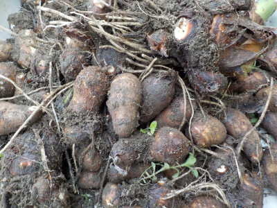
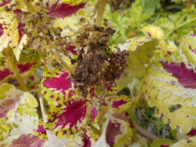
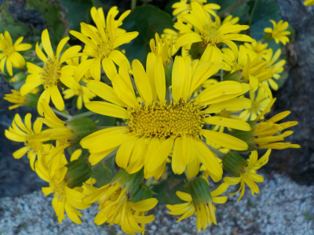
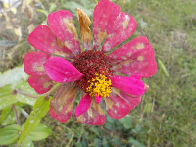
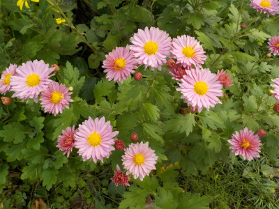

遊びで植物を育てよう
2020/11/29
里芋を掘りました。

いろいろ料理方法があるとは思いますが、ほぼ味噌汁に使っています。
味噌汁が一番簡単に食べれる気がする。
【ページTOP】 【11月TOP】
【園芸TOP】
2020/11/15
コリウスの種子は出来ているのかな？

花の後が茶色くなっていますが、触った感じ手ごたえがないです。
今まで種を採取したことがないので種子がどんなものか分かりませんが、なんか種がなさそうです。
案外種があるかもしれないので、茶色っぽい部分は採っておいて春にタネマキします。
【ページTOP】 【11月TOP】
【園芸TOP】
2020/11/15
2つの花がくっついたツワブキ。

一番上の目立つ場所の花が、変な恰好でした。
隅っこだとありそうですが、天辺で奇形って．．．。
ちょっと嫌ですね。
【ページTOP】 【11月TOP】
【園芸TOP】
2020/11/01
秋になりましたね。

花が枯れていきます。秋ですね。

菊が咲きだしました。秋ですね。
【ページTOP】 【11月TOP】
【園芸TOP】
過去の日記
【2019年11月の日記】
【2018年11月の日記】
【2017年11月の日記】
【2016年11月の日記】
【2015年11月の日記】
【2014年11月の日記】
【2013年11月の日記】
【2012年11月の日記】
【ページTOP】
【11月TOP】
【園芸TOP】
畑仕事じゃないよ。
【おいしいものを食べよう。】【たくさん寝よう。】
【ソロ活をしよう!】【季節感のあることをしよう。】【動画視聴はほどほどに。】【当サイトの全てのコンテンツは無断転載禁止です。】